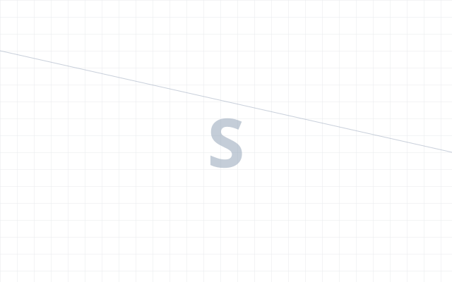
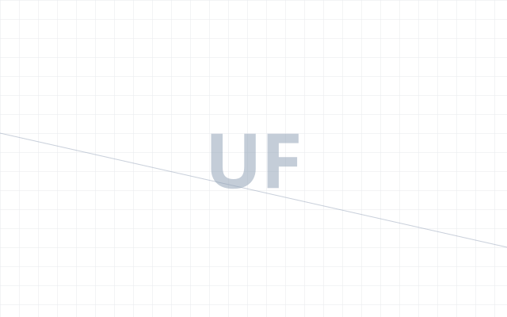
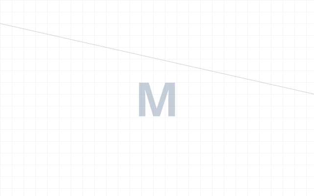
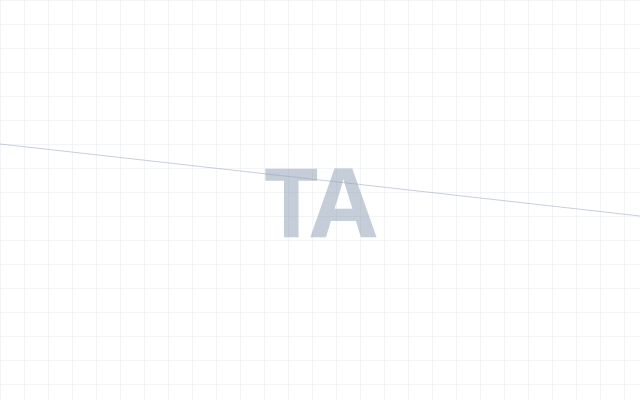
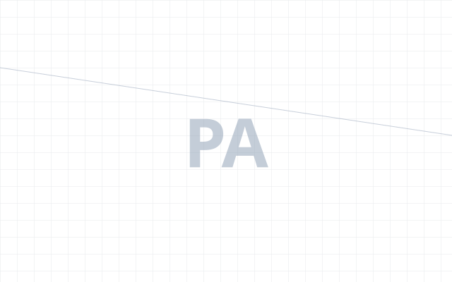
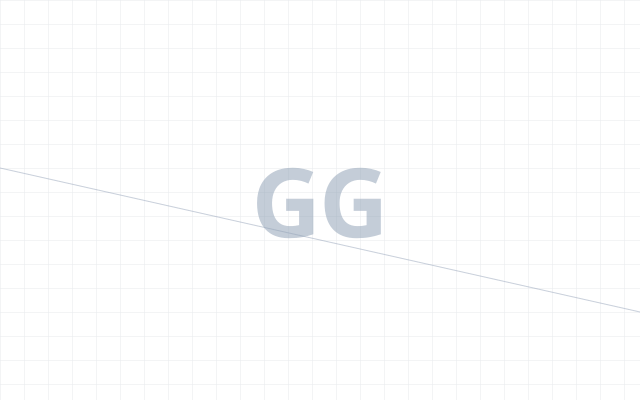
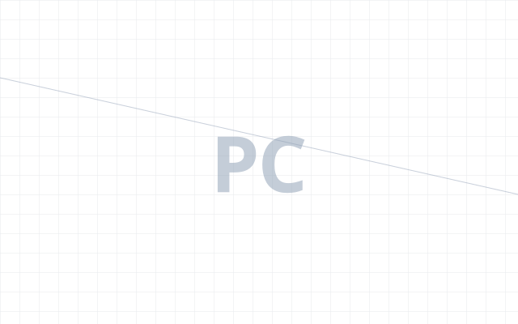
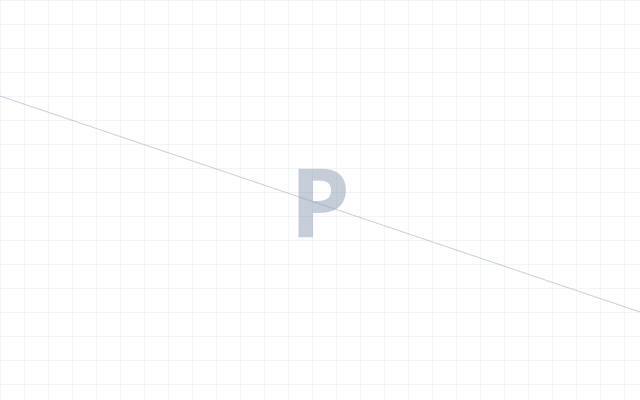
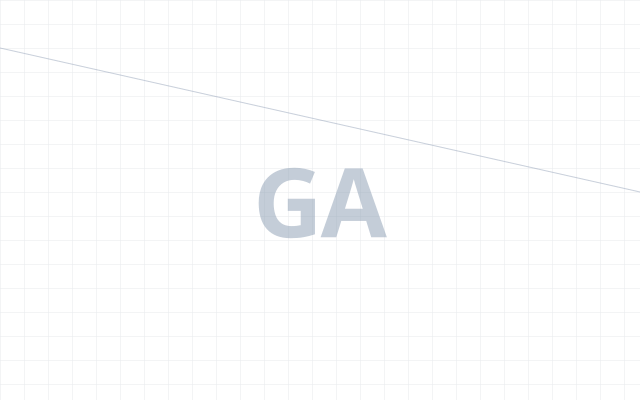

AI-ready design systems
Token and component systems defined once and generated to every surface, at 1:1 Figma-to-code parity. Architected so AI agents can read, compose, and generate real interfaces without drift.
Senior Product Designer
I build AI-ready design systems with 1:1 code parity and architect the AI workflows that connect product, design, and engineering. Working alongside Technical Product Managers and developers, I close the traditional handoff: designing the systems, optimising the processes, and contributing directly to PRDs, prototypes, and production code.
Token and component systems defined once and generated to every surface, at 1:1 Figma-to-code parity. Architected so AI agents can read, compose, and generate real interfaces without drift.
End-to-end product experience across complex platforms. Auditing, simplifying, and unifying entire ecosystems for consistency, accessibility, and usability.
Bridging product, design, and engineering through AI-first workflows, shared system architecture, and direct contributions to PRDs, prototypes, and production code.

Product & Corporate WebsiteA 200+ product coffee catalogue serving households and businesses from one site. Split navigation, a preparation-method finder, eight sub-brands on a shared attribute model. Bilingual, live.

Analytics platformResearch → design system → UI → usability testing. Led to a Bulgarian Football Union partnership.

Marketplace · shippedConnecting people to licensed therapists and coaches. Full design and IA: matching by need, booking, corporate vouchers. Live on Google Play.

Fintech · cross-borderThe USD bank account feature for a cross-border tax refund service, designed end to end from proposition to launch.

Internal order systemComplex order and project management UI for a top US auto parts distributor.

Consumer mobile appFirst-ever mobile app for Bulgaria's leading lifestyle media brand. Shipped.

Fintech · conceptA self-initiated concept, not client work: one IA unifying crypto, fiat and stock trading. 50+ Figma components and variants.

Corporate websiteFully custom site and design system for a leading enterprise IT integrator, on a Laravel CMS.

NFT / Web3 · conceptA concept study, not client work: an artist discovery platform for the NFT community, designed full scope from IA to UI.
Before tech, I spent eleven years helping build and grow a strength and nutrition coaching practice. As the owner's close business partner, I took ownership of many of the systems that defined the business. I led a team of coaches, designed the recruitment and onboarding programme, created the assessment framework used across the practice, conducted hundreds of client interviews, and built a data-driven approach to measuring progress and outcomes.
It taught me something design school doesn't: people rarely behave the way they say they will. You have to meet them where they are and design not for what they say, not even what they think they want, but for what they truly need at that moment in their journey.
Have a system to build, a surface to audit, or a handoff gap to close?
LET'S WORKAnswers are built from the same source as this page
Every answer is built from Yordan's own written record, cited to the passage it came from — or it says so.